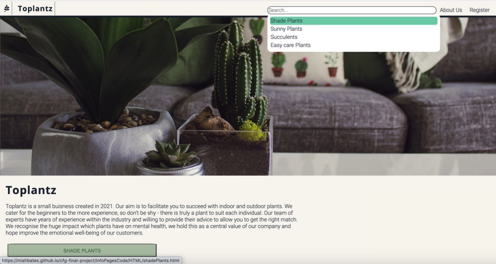

Hello, my name is...
Miah Elizabeth Bates
I'm an aspiring software developer.
I'm an oncology nurse working in the NHS with hopes of entering the world of tech.
01. About me
I made the move from Wolverhampton to London six years ago to become a nurse in the big city! For the past three years I’ve have had the honour of caring for patients with complex oncology conditions throughout their cancer journey.
Although I love my job and the patients I never planned this career path as I always dreamed of being a fashion designer when I was younger. My constant desire to make and learn new things has always been pursued in my own time through painting, colouring, drawing (anything which makes mess really). When I’m not covered in paint I’m usually getting around London the best way I know how... on wheels - whether a bike or a pair of rollor-skates! I’ve recently got a new companion ‘Gus' who has not quite got to grips with my modes of transport yet.
02. Why Coding?
I’ve always had a passion for learning and development. My introduction into coding came from my frustration with the computer systems within the NHS. My journey began on learn.co with a simple HTML/CSS introduction course. I loved the idea of learning about this world I knew nothing about! I then went on to MOSH programming youtube videos - I loved his style of teaching which I could code along with and perform small challenges through his online courses. This is where I fell in love with CSS, the idea of bringing the page to life through design inspired me.
I then took a Code First Girls ‘introduction into web development’ course which introduced me to the basics of javascript and gave me a taster of what it would be like to work in the industry. We worked in small teams to build a group project. Take a sneaky peak at our webpage which we designed for promotion of plants on mental-health and wellbeing (..and I continue to battle against creating a fully functional search bar!).
This collaborative atmosphere confirmed my dream of becoming a software developer and pushed me to apply for FAC - and gave me the motivation to persevere through the tough code war katas!
I would love to pull all of my skills together and improve the future of healthcare as I feel that websites which can facilitate booking appointments will be the future to allow patients to have better access to healthcare. I hope that by utilising these skills I can have a positive impact on both, tech and healthcare communities.
03. Why Founders and Coders?
My initial attraction to Founders and Coders was the safe space for learning in which it creates. I have been able to experience this within the discord channel myself, through participating in weekly meet-ups and general discussion. I’ve enjoyed being part of a community who all have a common interest of developing together, where the aim of helping others is encouraged without fear of asking a ‘silly question’. Ultimately, programmers face constant failure before reaching success when working through challenging problems, being able to work in a team and covey your ideas to one another clearly is essential to gaining solutions.
I am a huge supporter of the ethics of this organisation in promotion of diversity and inclusivity amongst applicants - this is something which matches my internal values as I believe being an ally to other communities is a duty of mine which I take seriously.
I feel this community prepares applicants well for the environment of the tech industry through an apprenticeship style approach. I admire the teaching style of pair programming and collaborative learning, as I believe this allows strong understanding and application of concepts. In my current job, I have always been an active member in teaching junior nurses, so the idea of being able to shape future developers in upcoming cohorts excites me and is certainly a challenge in which I would relish. I hope the FAC course will provide me with the foundations for the long and happy career in software development I’ve been dreaming of.
04. Contact Me
Email me at miahbates@icloud.com
Alternatively drop me a message in the discord channel!